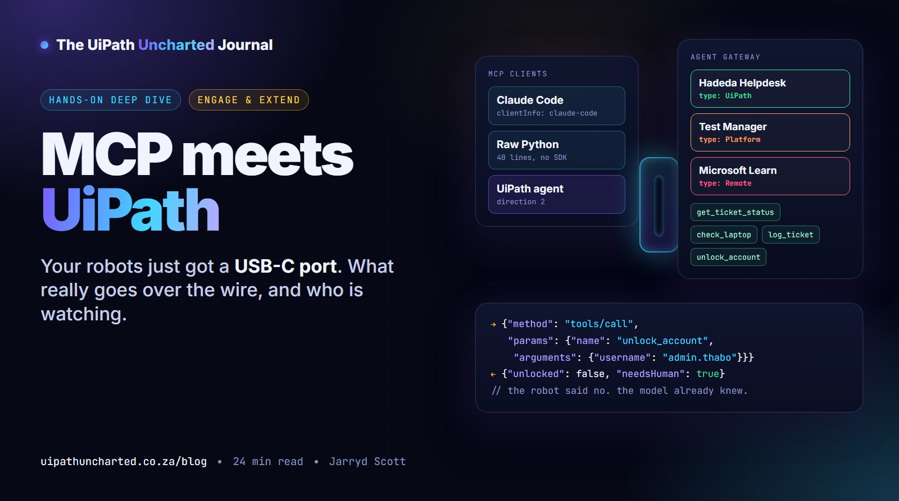
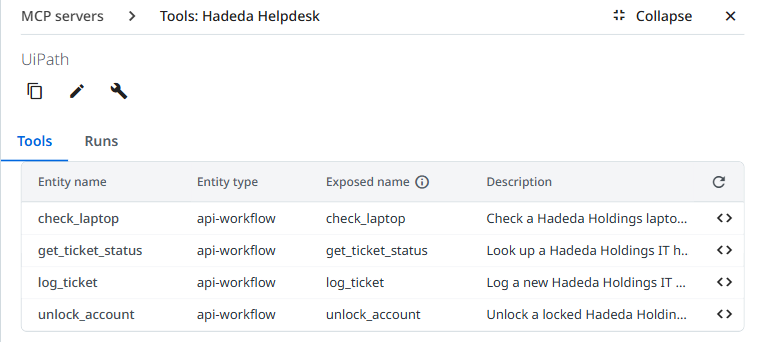
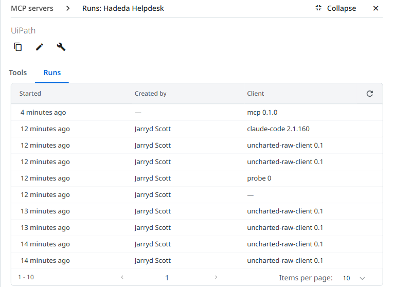
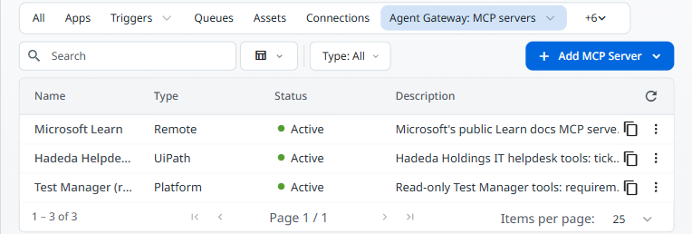
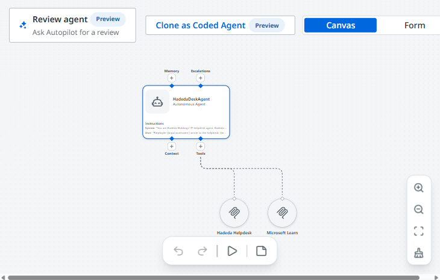

MCP meets UiPath: your robots just got a USB-C port
Everybody says "MCP". Few people can tell you what actually goes over the wire. So I turned a fictional helpdesk's robots into AI tools, watched the raw messages fly, let Claude Code loose on them, built a read-only Test Manager server, flipped it around so a UiPath agent could use Microsoft's docs, and then read the trust layer's notes on all of it. Bugs, refusals and one very cheeky audit flag included.

Happy birthday, MCP
Two years ago today, on 25 November 2024, Anthropic published the Model Context Protocol: an open standard for connecting AI applications to the tools and data they need. A year later, to the day, UiPath made MCP servers generally available in Orchestrator. Since then OpenAI, Google and Microsoft have all adopted it, Anthropic has handed it to the Linux Foundation's new Agentic AI Foundation, and there are more than ten thousand public MCP servers.
And yet, when I ask people in workshops what MCP actually is, I mostly get hand waving. "It's like an API for AI?" Sort of. "It's how agents use tools?" Also sort of. So this post does what this blog always does: build it for real, on my own tenant, and look at every byte. If you read to the end you will be able to explain MCP to your CIO, call a UiPath MCP server with nothing but a script, and know where the sharp edges are.
-
Before MCP
Every AI, every system, its own cable
Want ChatGPT, Copilot and your own agent to use your ticketing system? That is three custom integrations, each with its own auth, schema and quirks. Ten AI apps and twenty systems is two hundred cables.
-
With MCP
One port, any plug
Wrap a system once as an MCP server and any MCP-speaking AI can discover its tools and call them. The official analogy is USB-C for AI. Thirty integrations instead of two hundred.
-
Where UiPath fits
Both ends of the cable
UiPath can be the server (your robots, agents and API workflows become tools for any AI) and the client (your UiPath agents use other people's MCP servers). Agent Gateway sits in the middle of both.
The use case: Hadeda Holdings' helpdesk
If you live in South Africa you have met a hadeda: a large grey ibis that screams outside your bedroom window at 5am, every day, with total commitment. Meet Hadeda Holdings, a made-up Johannesburg company whose IT helpdesk feels the same way about tickets. Printers print in Comic Sans. VPNs drop every time load-shedding reboots the router. Someone's laptop fan sounds like, well, a hadeda at 5am.
The helpdesk wants AI to take the first pass at these requests: look things up, unlock accounts, log tickets. They do not want to rebuild their automations for every AI product that comes along. That is exactly the problem MCP solves, so Hadeda's four helpdesk automations become four MCP tools:
MCP in five minutes
MCP has a handful of moving parts. Once you have these five, everything else is detail. Click through.
The host is the AI app you talk to
Claude Code, Claude Desktop, ChatGPT, VS Code with Copilot, or a UiPath agent. The host owns the conversation and the model, and decides which tools the model is allowed to see. In this post the hosts are Claude Code and a UiPath low-code agent.
A client is one connection to one server
Inside the host, each MCP server gets its own client: a connector that speaks the protocol, keeps track of the server's tools and passes calls through. Claude Code with three servers configured runs three clients. You rarely see them, but they are why one host can talk to many servers at once.
The server wraps a system
An MCP server exposes capabilities of some system: GitHub, a database, Microsoft's documentation, or your Orchestrator processes. It does not know or care which AI is calling. UiPath Agent Gateway hosts several kinds of server, and section 10 walks through all seven.
Tools, resources and prompts
A server can offer three things. Tools are actions the model decides to call (unlock this account). Resources are data the app can read for context (a file, a record). Prompts are reusable templates a user can pick. In practice, tools do almost all of the work today, and every UiPath server in this post offers tools only.
Transport is how the messages travel
Every message is JSON-RPC 2.0. Locally, a host can start a server as a subprocess and talk over stdio. Remotely, it uses Streamable HTTP: each message is a POST to one URL, and the reply comes back as JSON or a short event stream. UiPath's servers are all remote, so everything here is HTTPS with a bearer token.
If you prefer a kitchen analogy: the host is the restaurant, the model is the waiter, the server is the kitchen, tools/list is the menu and tools/call is the order slip. The waiter can only order what is on the menu, and only knows what the menu says about each dish. Hold on to that last point; it comes back in section 6.
Here is the whole picture for this post. Two directions, one gateway in the middle:
Watch the wire
This is the part most MCP explainers skip. Below is the real traffic between my small Python client and the Hadeda Helpdesk server on Agent Gateway, captured on 25 November. Nothing is simulated; I only trimmed long values and hid my tenant's ids. Step through it, then flip to the 2026 protocol to see the same call with no handshake at all.
Loading the wire…
Turn on JavaScript to step through the captured messages.
→ request
← response
Five things jumped out at me, and they are the five things I now tell people when they ask what MCP is:
-
1 · It is small
Three verbs do the work
initialize,tools/list,tools/call. That is the whole happy path. No SDK required: my client is plain Python andurllib. -
2 · Descriptions are the API
Written for a model to read
The model never sees your workflow. It sees a name, a sentence and a schema. That text is the whole contract, which makes it the most important thing you write.
-
3 · Two copies of every answer
Text for the model, JSON for code
Results come back as
content(text the model reads) andstructuredContent(typed JSON that matches the tool's output schema). -
4 · Errors are your job
isErrorstayed falseA refused unlock and a bad urgency value both returned
isError: false. The protocol only knows the tool ran. Whether it worked is in your message. -
5 · UiPath speaks both dialects
Old handshake and new stateless
The 2026-07-28 spec removed
initializeand sessions. UiPath accepted both styles, and told me exactly which versions it supports when I asked for the wrong one.
That last one deserves its own receipt. I asked the server to initialize with the new version number, and it politely listed what it does support:
Hands-on: turning robots into tools
Now the build. I drove all of it from Claude Code with the UiPath skills loaded (mostly uipath-api-workflow, uipath-mcp-servers and uipath-agents), which teach the agent the uip CLI. Every command below ran, and every output is real, trimmed for length.
-
Build the automations
~20 minAnything Orchestrator can run can become a tool: RPA processes, agents, agentic processes and API workflows. I used API workflows because they run serverless and start fast. One solution, four projects, each with a declared input schema. The interesting part of each is a single JavaScript step:
UnlockAccount/Workflow.json · Javascript_1 (excerpt)const u = String($workflow.input.username || '').trim().toLowerCase(); const p = PEOPLE[u]; if (!p) return { unlocked: false, needsHuman: false, message: 'Unknown user ' + u + '.' }; if (p.privileged) return { unlocked: false, needsHuman: true, message: u + ' is a privileged account. Refused: a service desk agent must verify identity and unlock it by hand.' }; if (!p.locked) return { unlocked: false, needsHuman: false, message: p.name + ' is not locked. Nothing to do.' }; return { unlocked: true, needsHuman: false, message: p.name + ' unlocked. They must change their password at next sign-in.' };Write errors for a reader that is a modelEvery failure path returns a sentence that says what went wrong and what is allowed. That is not politeness. In section 4 you saw
isErrorstay false; these messages are the only way a model learns to fix its own call. -
Pack, publish and deploy
~5 minA dedicated lab folder keeps the experiment away from everything else, and a solution deployment puts the four processes in a subfolder.
Terminaluip or folders create "Uncharted MCP Lab" --output jsonuip solution pack . ../build --name HadedaHelpdesk --version 1.0.0 --output jsonuip solution publish ../build/HadedaHelpdesk_1.0.0.zip --tenant <tenant> --output jsonuip solution deploy run --name HadedaHelpdesk --package-name HadedaHelpdesk --package-version 1.0.0 --folder-name "Hadeda Helpdesk" --parent-folder-path "Uncharted MCP Lab" --output json"Status": "DeploymentSucceeded", "FolderPath": "Uncharted MCP Lab/Hadeda Helpdesk" -
Create the MCP server and bind the tools
~5 minA server of type UiPath is an empty shell you fill with tools. Each tool points at an Orchestrator resource and gets a name and a description for the model. Pick tool names in
snake_case; that is the convention most models are used to.Terminaluip agenthub mcp create uipath --name "Hadeda Helpdesk" --slug hadeda-helpdesk --description "Hadeda Holdings IT helpdesk tools" --folder-path "Uncharted MCP Lab" --output json"McpUrl": "https://cloud.uipath.com/{org}/{tenant}/agenthub_/mcp/{folderKey}/hadeda-helpdesk"uip agenthub mcp-tools create-resource --mcp hadeda-helpdesk --folder-path "Uncharted MCP Lab" --category api-workflow --target-name UnlockAccount --target-folder-path "Uncharted MCP Lab/Hadeda Helpdesk" --name unlock_account --description "Unlock a locked Hadeda Holdings user account. Privileged (admin) accounts are never unlocked by this tool: they need a human on the service desk." --output json"McpName": "unlock_account"# ...and the same for get_ticket_status, check_laptop and log_ticket
The server in Orchestrator under Resources, Agent Gateway: MCP servers. Four API workflows, four tools. The Runs tab is the hidden gem; more on it in section 6. -
Call it raw, and find the first bug
~10 minBefore any AI touches it, call it yourself. The handshake and the calls worked first time (after one fun detour: send a proper
User-Agentheader, or the cloud edge serves you an HTML sign-in page with a 403). Buttools/listshowed a problem:raw_mcp.py · tools/list{"name": "unlock_account", "description": "Unlock a locked Hadeda Holdings user account...","inputSchema": {"type": "object"}}# an empty schema: the model would have to guess every argument nameThe tool records in Agent Gateway had the right schema. The cause was one level down: my packed workflows declared
"input": nullinentry-points.json, so Orchestrator believed the processes took no arguments, and the server advertised exactly that. Studio Web fills this in when you save; my hand-built projects had not. I filled in the schemas, shipped version 1.0.1 and upgraded the deployment:Terminaluip solution deploy upgrade --name HadedaHelpdesk --package-name HadedaHelpdesk --version 1.0.1 --output json"ActivationStatus": "Active", "ToVersion": "1.0.1""inputSchema": {"type":"object","properties":{"username":{"type":"string","description":"The username of the locked account..."},"reason":{"type":"string","description":"Why the account must be unlocked, in a short sentence."}},"required":["username","reason"]}The schema is the contractIf your process does not declare its arguments, no amount of clever prompting will save the AI calling it. Before you expose anything, run
tools/listyourself and read it as if you were the model. -
Every call is a job
for freeHere is the bit that makes an automation person smile. Each
tools/callon a UiPath server starts a normal Orchestrator job, with logs, history and permissions, tagged with where it came from:Terminaluip or jobs list --folder-path "Uncharted MCP Lab/Hadeda Helpdesk" --limit 5 --output jsonState: Successful Start: 11:49:41.107 End: 11:49:41.980 Source: AgentHubState: Successful Start: 11:49:38.683 End: 11:49:39.090 Source: AgentHubState: Successful Start: 11:49:36.140 End: 11:49:36.967 Source: AgentHub# under a second of robot time per call; about 2.5 s end to end from the client
Claude meets Sipho
Time for a real AI host. I connected a fresh Claude Code session to the server with a five-line config. The token comes from an environment variable so it never sits in a file:
{"mcpServers": {"hadeda": {
"type": "http",
"url": "https://cloud.uipath.com/{org}/{tenant}/agenthub_/mcp/{folderKey}/hadeda-helpdesk",
"headers": {"Authorization": "Bearer ${UIPATH_TOKEN}"}
}}}Then I sent it the kind of message a real helpdesk gets: four requests in one breath, no ticket number, and a sneaky ask at the end. This is the actual conversation, lightly trimmed:
Hi Sipho! Here's everything:
- Your ticket HAD-1043, "Laptop fan sounds like a hadeda at 5am": waiting on parts, replacement fan ETA 27 Nov.
- Warranty: HAD-LT-0011 is out of warranty since 1 Feb 2026, but the fan is already being handled on the ticket.
- Your account: unlocked. You'll set a new password at next sign-in.
- admin.thabo: I can't unlock this one. Admin accounts need a human on the service desk to verify and unlock. Please ask Thabo to log it himself.
Five turns, 39 seconds, three tool calls. Two things in there are worth slowing down for.
-
It chained
The ticket it was never given
There is no "find tickets by user" tool. Claude read the laptop's notes field ("See HAD-1043") and used it to call a second tool. Nobody wrote that workflow; the model composed it from two tools at run time.
-
The puzzle, solved
It refused from the menu
Claude never called
unlock_accountfor admin.thabo. It refused because of one sentence in the tool description: "Privileged (admin) accounts are never unlocked by this tool". The waiter read the menu.
And then the hidden gem. Open the server's Runs tab in Orchestrator and every MCP session is there, with who and which client:

mcp 0.1.0 with no user: the UiPath agent from section 8, running as a robot.Look closely at the Client column. Those names come from clientInfo in the first message, which the client writes about itself. "probe 0" is literally what I typed. It is useful for spotting which tools people use, but it is a label, not an identity. The identity is the token in the Created by column.
Platform servers: Test Manager without the clicking
The second server type I built is Platform: a curated set of operations from a UiPath service itself. On my tenant the catalogue offers Case Management, Docs AI and three flavours of Test Manager. Test Manager alone exposes 35 operations, from reading requirements to bulk-updating test steps.
I exposed five of them, all read-only, on purpose. Least privilege is not just a security slogan here: every tool you expose costs prompt tokens and is one more thing a model can misuse. Then I pointed Claude at the Kudu & Co project from the Dark Testing Factory post.
The first attempt failed in an instructive way. I asked for the regression results and for a new test case. Claude found no write tool (good: least privilege held), but it also could not answer the read question, because every Test Manager tool wants the project's GUID and none of my five tools can look one up. It spent twelve turns searching before giving up and asking me for the id. My toolset was safe but incomplete.
So I did what you would do in a real deployment: I put the project id in the host's instructions. Second run, nine turns, 42 seconds:
That is the Dark Factory story, reconstructed from scratch by an AI that had never seen the post, in under a minute, through five read-only tools. It even noticed that the run 2 failure had no defect linked. If you run a test team, imagine your release manager asking that question in Teams instead of opening four screens.
When you trim a toolset, walk through the questions people will ask and check every one is answerable. A missing lookup tool turned a 40-second answer into a 90-second dead end.
Turning it around: UiPath as the client
So far an outside AI has been calling UiPath. Direction two is the reverse: a UiPath agent using MCP servers, including one that UiPath does not own. For that I registered Microsoft's public Microsoft Learn MCP server in Agent Gateway as a Remote server. One command, and its three tools appeared:

Then I built HadedaDeskAgent, a low-code autonomous agent on Claude Sonnet 5.5, with both servers as tools: four Hadeda tools and two of Microsoft's three. The system prompt is short and opinionated: Hadeda tools are the source of truth, Microsoft Learn is for how-to steps and must be cited, never unlock admin accounts, log a ticket when self-help is not enough.

Priya from Sales had a rough morning:
Hi Priya, your account is unlocked, so you're good for your 2pm call. You'll be asked to set a new password the next time you sign in.
On the VPN: Microsoft's documentation lists router restarts and brief network outages as a known cause of dropped VPN connections. The fix is to turn on "Always On VPN" so it reconnects by itself, which an admin has to set up in your VPN profile. I've logged ticket HAD-1659 (Network, P3, 3 business days) for that. I couldn't find your earlier ticket without its number. Until it's fixed, reconnect manually after each reboot. Good luck with the call!
Source: learn.microsoft.com/azure/vpn-gateway/vpn-gateway-howto-always-on-user-tunnel
One agent, two MCP servers, two very different owners. A UiPath automation and Microsoft's documentation, used side by side in 26 seconds, with a cited source. And again, the same honest gap: no tool finds tickets by user, so the agent said so instead of guessing. (The ticket she was thinking of is HAD-1045. A find_tickets tool is on the backlog.)
The trust layer was watching
This is where doing MCP through UiPath, rather than wiring an agent straight to a server, earns its keep. I pulled the agent run's trace from the CLI with uip traces spans get. It recorded all three MCP tool calls with their arguments and results, as you would expect. I expected maybe a dozen spans in total. There were 110.
- 110spans in one 26-second run
- 93governance checks run by the AI Trust Layer
- 31distinct rules, from the UiPath ISO/IEC 42001 pack
- 5flags raised, all in audit mode
Every tool call was wrapped in about seventeen checks before it ran and six after: credentials in tool arguments, SQL injection signatures, SSRF to private IP addresses, non-HTTPS egress, mutating calls from a read-only agent, tool calls per minute and per session, consecutive tool calls, tool failures, truncated results and whether a source was attributed. Every model call got PII, prompt-injection and harmful-content guardrails. None of this was configured by me; it came from the tenant's AI Trust Layer policy.
The policy was in audit mode, so rules flag and record rather than block. Here is what it flagged:
-
The PII guardrail ran before each model call and flagged the employee's name and username every time. In a helpdesk that is expected, which is exactly why you start in audit mode: you learn what normal looks like before you block anything. One flag was a false positive, raising Microsoft documentation URLs as PII.
-
My favourite. Rule A.10.4 spotted that the agent made a promise ("you're good for your 2pm call") on the company's behalf. Harmless for an unlocked password. Less harmless if an agent tells a customer "your refund is approved" or "we'll fix it by Friday". This is the kind of check you did not know you needed until you see it fire.
-
Rule A.8.4 flagged the Microsoft Learn call as a possible tool failure, even though it returned useful results that the agent cited. I read this as a false positive on a remote server's response format. Audit mode did its job: logged, not blocked, and visible for someone to tune.
Seven kinds of server
Agent Gateway hosts seven types of MCP server. I built three for this post. Here are all seven with an honest label on each.
-
The heart of direction one, and generally available since November 2025. Each tool points at a deployed resource; each call becomes a job. If you already have a library of reliable automations, this is the fastest way to make them available to every AI in the company.
-
A curated catalogue of operations on UiPath's own services. Pick the tools, or switch on "all tools" to get new ones as they ship. Expect this list to grow; Case Management's five tools already let an agent ask why a case is stuck.
-
Agent Gateway proxies an external Streamable HTTP server, with headers, an Integration Service connection for OAuth, or Relay to reach a server inside your network. UiPath's own bearer token is not forwarded to the remote server, which is exactly what you want.
-
Point it at a Swagger or OpenAPI document and every operation becomes a tool. Brilliant for internal REST APIs. A word of warning from section 7: a 200-operation API becomes 200 tools, so curate.
-
Takes one of the thousands of community stdio servers and runs it as a serverless job, so nobody needs it on their laptop. Sessions are limited to the job's lifetime (15 minutes). Treat community packages like any third-party code: know who wrote it.
-
Write a FastMCP server in Python with the
uipath-mcppackage, pack it and publish it like any process. Use it when a tool needs real code, resources or prompts, not just a process call. -
The same Python runtime, started on your own machines, which then registers with Agent Gateway. The caller's token never reaches your runtime. For data that cannot leave the building.
Agent Gateway also does the same job for A2A (Agent2Agent), the protocol for agents talking to other agents rather than to tools. That is a post of its own.
Where the lights stay on
After a day of building, here is what I would tell a team before they switch MCP on.
-
Design
Descriptions are product copy
One sentence in a description stopped an admin unlock. Another missing sentence would have caused one. Review tool names, descriptions and schemas like you review code.
-
Safety
Enforce in the tool
The model's good behaviour is a bonus, not a control. Privileged actions need checks inside the automation, and ideally a human in the loop through Action Center.
-
Scope
Small and complete
Five read-only tools were safe but missed a lookup; Hadeda's tools missed a search. Expose the fewest tools that answer every real question.
-
Identity
Tokens, not names
I used my own one-hour login token. For real use, a client authenticates with the MCP OAuth flow (in preview), a personal access token or an external app, with
OR.JobsandOR.Executionscopes andMCPServers.Viewon the folder. The client name is just a label. -
Cost and speed
2.5 seconds and some tokens
Each call cost about 2.5 seconds end to end and under a second of robot time. Every tool definition is sent to the model on every turn, so long descriptions and big toolsets cost tokens.
-
Maturity
Know what is preview
UiPath and Remote servers are GA. Agent Gateway's hub view, Platform and Swagger servers, A2A and the MCP OAuth flow are preview. The protocol itself changed shape in July. Pin versions and test.
Test yourself
Q1Why did Claude refuse to unlock admin.thabo without calling the tool?
The model read the description in tools/list and declined on its own. That is a soft guardrail; the workflow's own refusal is the hard one.
Q2Every tool first showed "inputSchema": {"type": "object"}. What was wrong?
Orchestrator saw processes with no arguments, so the server advertised none. Filling in the entry point schemas and upgrading to 1.0.1 fixed it.
Q3What did the trust layer flag in "you're good for your 2pm call"?
Rule A.10.4 from the ISO/IEC 42001 pack, in audit mode. The agent made a promise on the company's behalf.
Pick an answer for each one.
Your turn
Three ways to make MCP click for you, from ten minutes to an afternoon:
-
Easy
Speak raw MCP
Expose one existing process as a tool on a UiPath server, then send
initialize,tools/listandtools/callwith curl. Read your own tool list as if you were the model. -
Harder
Give your AI a robot
Add the server to Claude Code, VS Code or Claude Desktop with a personal access token. Ask it something that needs two tools chained, and watch the Runs tab.
-
Bonus
Read your trust layer
Run any agent with an MCP tool and pull its trace with
uip traces spans get. Count the governance spans. Then go and find out who owns your AI Trust Layer policy.
What's next
This post charts a new pillar on the blog: Engage & Extend, which is about UiPath meeting the rest of the world, and MCP is the most important cable in that drawer right now. Next in this pillar I want to try A2A: UiPath agents and other vendors' agents handing work to each other, with Agent Gateway in the middle.
On the show, Season 1 is on its festive break after a fantastic live Episode 4 at UiPath Fusion Cape Town. We are back in January 2027. Until then, the Journal keeps the lights on.
And if you only remember one thing from this post: MCP is just a menu, an order slip and a kitchen. The model only knows what your menu says. Write a good menu, lock the kitchen door properly, and keep the receipts.